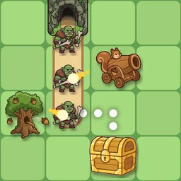
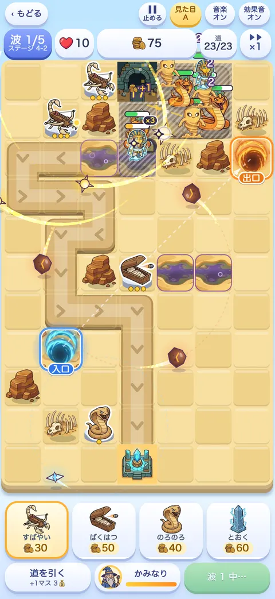
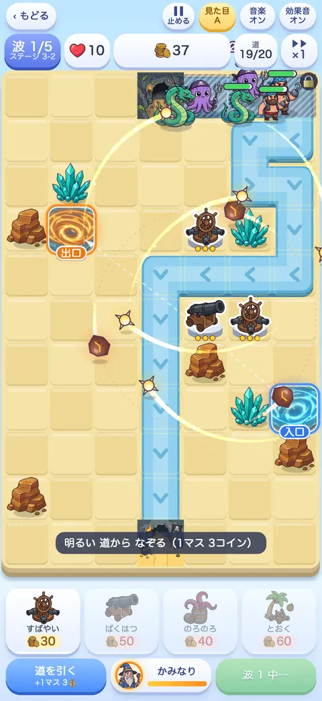
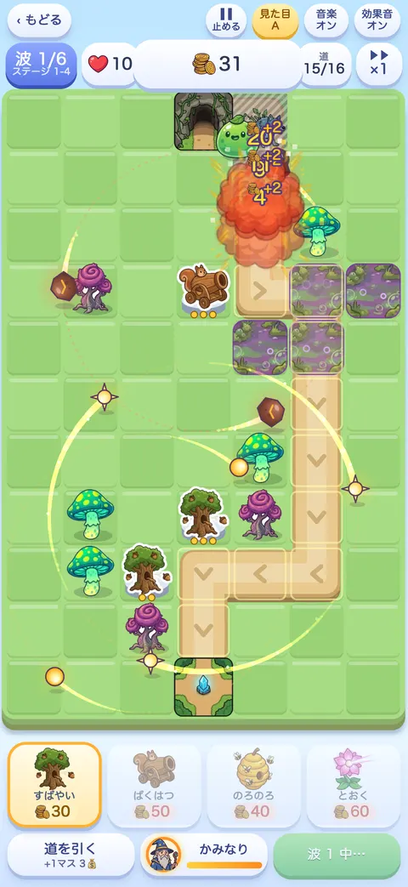
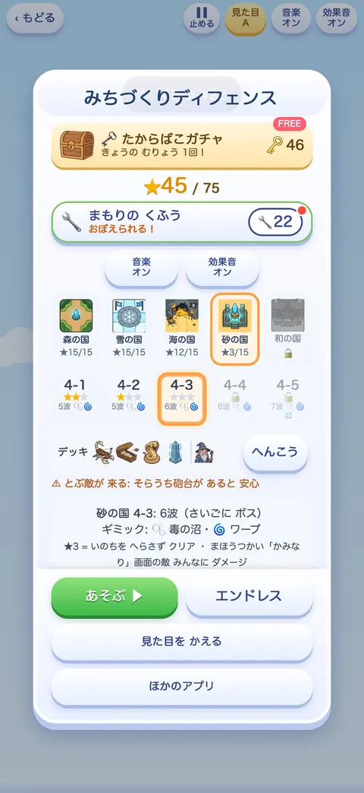
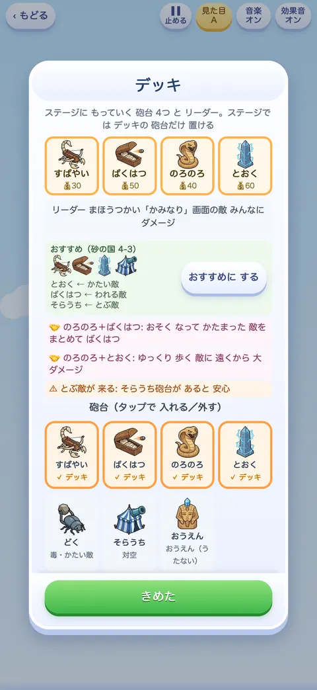
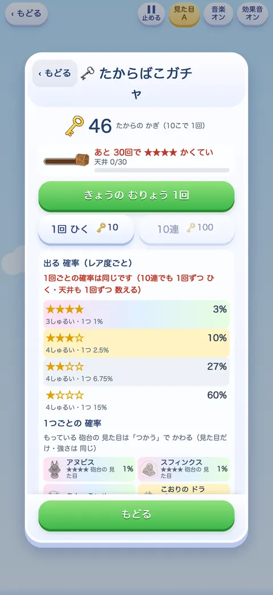

道を引くタワーディフェンス（iPhone）
みちづくりディフェンス
道は、あなたが引く。
敵の行列から、宝を守れ。
入口から宝まで、マス目を指でなぞって道を引きます。くねくね長い道にして、道ぞいに砲台をならべれば、敵は宝まで届きません。波のあいだも道を引きなおせるから、最後まで作戦を変えられます。
App Store で近日公開無料・広告あり／iPhone（iOS 18 以降）


アプリの画面
みちづくりディフェンスとは？
みちづくりディフェンスは、マス目を指でなぞって入口から宝まで道を引き、道ぞいに砲台を置いて敵の行列から宝を守るタワーディフェンス。波のあいだも道を引きなおせる。5つの国・25ステージとエンドレス。無料（広告あり）のiPhoneアプリ。
- 料金無料・広告あり
- 対応iPhone（iOS 18 以降）
- ジャンル対戦






こんな人におすすめ
- 作戦を考えて守りきるゲームが好きな人
- 迷路やルートを考えるのが好きな人
- すきま時間に1ステージずつ遊びたい人
遊び方は3ステップ
- 道を引く入口から宝まで、マス目を指でなぞって道を引きます。長くくねらせるほど有利。
- 砲台を置く道ぞいのマスに砲台を置きます。たおした敵が落とすコインで ふやしたり強くしたり。
- 波を守る敵の行列が道を進みます。波のあいだも道を引きなおして、宝まで届かせなければクリア。
ルール
道を引く
マス目を指でなぞって、入口から宝まで道を引きます。くねくね長い道にするほど、敵は長く歩きます。
砲台で守る
道ぞいのマスに砲台を置きます。たおした敵が落とすコインで、砲台をふやしたり強くしたりできます。
いつでも道
波のあいだも道を引きなおせます。敵がいるマスと通ったマスより先だけ。波のあいだはマスを足すとコインがいります。
特徴
- 7種類の砲台ばくはつ・のろのろ・どく・そらうち など
- 25ステージ森・雪・海・砂・和の5つの国
- いつでも道を引きなおせる敵が通ったマスより先を
- かぎでガチャ遊んで集めるだけ・課金なし
みちづくりディフェンス を無料で遊んでみる
App Store で近日公開無料・広告あり／iPhone（iOS 18 以降）
くわしい遊び方
マス目を指でなぞって、入口から宝まで道を引きます。道ぞいのマスをタップして砲台を置き、「波」をはじめると敵の行列が道を進みます。宝まで届かせずに、決まった数の波を守りきればクリアです。
- 道を長く：くねくね長い道にするほど、敵は長く歩き、砲台がたくさんうてます
- いつでも道：波のあいだも道を引きなおせます。敵がいるマスと通ったマスはかえられません。波のあいだにマスを足すとコインがいります
- コイン：たおした敵がコインを落とします。砲台をふやしたり、強くしたりできます
- ステージ：森・雪・海・砂・和の5つの国 × 5ステージ。星3つは いのちを へらさずにクリア。全部クリアするとエンドレス
よくある質問
道を自分で引くタワーディフェンスは？
みちづくりディフェンスは、マス目を指でなぞって入口から宝まで道を引き、道ぞいに砲台を置いて敵の行列から宝を守る iPhone のタワーディフェンスです。波のあいだも道を引きなおせます。ガチャは遊んで集めたかぎだけで、課金はありません。
無料ですか？
はい、無料でダウンロードして遊べます（広告あり）。App Store で近日公開です。
どの端末で使えますか？
iPhone（iOS 18 以降）で使えます。Android 版はありません。
道が引けないマスがある
岩などの じゃまものや砲台のあるマス、同じマスを2回通る道は引けません。波のあいだは、敵がいるマス・通ったマスより先だけを引きなおせます。
たからばこガチャは課金ですか？
いいえ。ステージで集めた「たからの かぎ」だけでひけます。課金はありません。出る確率はガチャの画面の表にのせています。30回のうちにいちばん上のレア度が出ないときは、30回目にかならず出ます。
デッキって何？
ステージにもっていく砲台4つです。ステージ一覧の「へんこう」で入れかえられます。「おすすめにする」で、そのステージに合った組み合わせになります。
音を止めたい
ステージ一覧か、遊んでいるときの上の「音楽」「効果音」のボタンで、オン・オフを切り替えられます。
記録はどこに保存されますか？
この iPhone の中にだけ保存しています。アプリを削除すると記録も消えます。
お問い合わせ
不具合やご要望は、メールでお知らせください。お使いの iPhone の機種と iOS のバージョンを書いていただけると助かります。